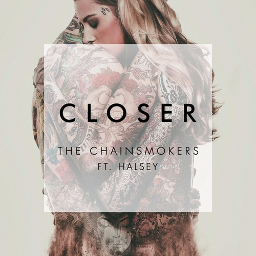

1. Shape of You
.Dẫn đầu chính là siêu phẩm 'Shape of You' của nam ca sĩ Ed Sheeran. Kết quả này không quá bất ngờ bởi sau khi ra mắt, đĩa đơn thứ hai của album Divide từng đứng nhất bảng xếp hạng của 44 quốc gia. Ngoài ra, nó còn đạt vị trí quán quân trên Billboard Hot 100 tới 12 tuần, trở thành ca khúc có lượt nghe trả phí vừa nhiều nhất trong 2 năm 2017 và 2018.
"Shape of You" ngay sau khi ra mắt đã thiết lập nhiều kỷ lục mới cho Ed Sheeran. Ca khúc là No.1 Billboard Hot 100 đầu tiên trong sự nghiệp, dẫn đầu iTunes Chart ở 81 quốc gia toàn thế giới và Billboard Hot 100 trong 12 tuần liên tiếp.
Ed Sheeran là chủ nhân của ca khúc được stream nhiều nhất trên Spotify.
2. One Dance
Tương tự, ca khúc từng thống trị trước đó là "One Dance" (Drake ft. Wizkid và Kyla) tuy bị đẩy xuống vị trí thứ hai nhưng cũng kiếm được hàng chục triệu USD từ Spotify. Con số này được ước tính dựa trên quy tắc phân chia lợi nhuận trên Spotify. Với mỗi lượt nghe, Spotify sẽ trả cho nghệ sĩ ¹/₂ cent (tương đương 0.005 USD).
"One Dance" có câu chuyện điển hình kiểu của Drake, dựa trên cảm xúc của một cuộc cãi vã lãng mạn qua một vật trung gian, thường là vật dụng công nghệ hiện đại như điện thoại, mạng Internet... Trong khi đó, phần âm nhạc của ca khúc được hình thành từ sample (mẫu âm) ca khúc Do You Mind của nữ ca sĩ Kyla phát hành từ trước. Kyla đồng thời cùng góp giọng trong ca khúc này bên cạnh nhà sản xuất và ca sĩ người Nigeria, Wizkid.
Phát hành từ giữa tháng 4, One Dance trở thành bản nhạc được khán giả toàn cầu thích thú. Theo một thống kê, có khoảng 66% nghe ca khúc này trên Spotify là dưới 25 tuổi. "One Dance" có giai điệu bắt tai, đi thẳng đến trái tim của người nghe và phù hợp với nhiều hoạt động từ chạy bộ, lái xe… là một cách giải thích cho sự thành công quá mức của ca khúc này.
"One Dance" của Drake xếp thứ hai trong danh sách bài hát được nghe nhiều nhất.
3. Closer
"Closer" là một bài hát của bộ đôi DJ người Mỹ The Chainsmokers hợp tác với ca sĩ người Mỹ Halsey nằm trong EP thứ hai của họ, Collage (2016), trong đó thành viên Andrew Taggart đóng vai trò góp giọng vào bài hát. Nó được phát hành như là đĩa đơn thứ ba trích từ album vào ngày 29 tháng 7 năm 2016 bởi Disruptor Records và Columbia Records.
Sau khi phát hành, "Closer" nhận được những phản ứng đa phần là tích cực từ các nhà phê bình âm nhạc, trong đó họ đánh giá cao giai điệu bắt tai cũng như quá trình sản xuất của nó. Ngoài ra, bài hát còn gặt hái nhiều giải thưởng và đề cử tại những lễ trao giải lớn, bao gồm chiến thắng tại giải thưởng âm nhạc Billboard năm 2017 cho Top Bài hát Hot 100, Top Hợp tác và Top Bài hát Dance/Electronic cũng như một đề cử giải Grammy cho Trình diễn song tấu hoặc nhóm nhạc pop xuất sắc nhất tại lễ trao giải thường niên lần thứ 59.

"Closer" là một bài hát của bộ đôi DJ người Mỹ The Chainsmokers hợp tác với ca sĩ người Mỹ Halsey"
4. Rockstar
"Rockstar" là một bài hát của rapper người Mỹ Post Malone hợp tác với rapper người Mỹ 21 Savage nằm trong album phòng thu thứ hai của anh, Beerbongs & Bentleys (2018). Nó được phát hành vào ngày 15 tháng 9 năm 2017 như là đĩa đơn đầu tiên trích từ album bởi Republic Records. Bài hát được đồng viết lời bởi hai nghệ sĩ, Joey Badass, Carl Austin Rosen với những nhà sản xuất nó Louis Bell và Olufunmibi "Tank God" Awoshiley, bên cạnh sự tham gia đồng sản xuất từ Fabio Almeida.
Sau khi phát hành, "Rockstar" đa phần nhận được những phản ứng tích cực từ các nhà phê bình âm nhạc, trong đó họ đánh giá cao giai điệu hấp dẫn cũng như quá trình sản xuất nó. Ngoài ra, bài hát còn gặt hái nhiều giải thưởng và đề cử tại những lễ trao giải lớn, bao gồm chiến thắng tại giải Video âm nhạc của MTV năm 2018 cho Bài hát của năm và hai đề cử giải Grammy cho Thu âm của năm và Trình diễn rap/hát xuất sắc nhất tại lễ trao giải thường niên lần thứ 61.
"Rockstar" là một bài hát của rapper người Mỹ Post Malone
5. Thinking Out Loud
" Thinking Out Loud " là một bài hát của ca sĩ kiêm nhạc sĩ người Anh Ed Sheeran , được thu âm cho album phòng thu thứ hai của anh ấy, × (2014). Nó được viết bởi Sheeran và Amy Wadge , và được sản xuất bởi cộng tác viên thường xuyên Jake Gosling . Nó được phát hành tại Mỹ vào ngày 24 tháng 9 năm 2014 với tư cách là đĩa đơn thứ ba của album.
Vào tháng 2 năm 2014, Wadge đến thăm Sheeran tại nhà để "thư giãn". [5] Vào khoảng thời gian đó, album phòng thu thứ hai của Sheeran, × , đã gần hoàn thành. [7] Wadge tiết lộ rằng chuyến thăm của cô ấy không phải là một buổi sáng tác. [5] Trong khi Sheeran đang tắm, Wadge chơi một vài hợp âm trên cây đàn guitar. Giai điệu này thu hút sự chú ý của Sheeran và anh ấy chạy xuống cầu thang. Sheeran đề nghị làm việc với giai điệu này, nhưng chỉ sau khi trở về nhà từ bữa tối, công việc mới bắt đầu. [5] Giai điệu phát triển từ một đoạn riff đơn giản .
"Thinking Out Loud" là một bản ballad lãng mạn với ảnh hưởng của tâm hồn đôi mắt xanh . Sheeran gọi nó là "bài hát dạo bước trên lối đi".
6. Lean On
" Lean On " là bài hát được thu âm bởi nhóm nhạc dance điện tử Mỹ Major Lazer và DJ kiêm nhà sản xuất thu âm người Pháp DJ Snake với giọng hát của ca sĩ Đan Mạch MØ . Nó được phát hành vào ngày 2 tháng 3 năm 2015, là đĩa đơn chính trong album phòng thu thứ ba của Major Lazer, Peace Is the Mission (2015). Nó được viết bởi MØ, Diplo , William Grigahcine, Martin Bresso và Jr Blender , và được sản xuất bởi Major Lazer và DJ Snake.
Bài hát đã nhận được sự hoan nghênh của giới phê bình.
7. Despacito-remix

" Despacito " là một bài hát của ca sĩ người Puerto Rico Luis Fonsi kết hợp với rapper người Puerto Rico Daddy Yankee trong album phòng thu năm 2019 của Fonsi Vida . [1] [2] Được phát hành vào ngày 12 tháng 1 năm 2017, bài hát được viết bởi Fonsi, Erika Ender và Daddy Yankee, và được sản xuất bởi Mauricio Rengifo và Andrés Torres . Một phiên bản remix có ca sĩ người Canada Justin Bieberđược phát hành vào ngày 17 tháng 4 năm 2017, giúp cải thiện thành tích bảng xếp hạng của bài hát ở nhiều quốc gia, bao gồm nhiều vị trí quán quân. "Despacito" đã được các nhà báo âm nhạc đánh giá là có công trong việc phổ biến nhạc pop nói tiếng Tây Ban Nha trở lại thị trường chính thống.
Bài hát đứng đầu bảng xếp hạng của 47 quốc gia và lọt vào top 10 của sáu quốc gia khác nhau
8. Love Yourself
" Love Yourself " là một bài hát được thu âm bởi ca sĩ người Canada Justin Bieber cho album phòng thu thứ tư của anh ấy Purpose (2015). Bài hát được phát hành dưới dạng đĩa đơn quảng cáo vào ngày 9 tháng 11 năm 2015 và là đĩa đơn chính thức thứ ba của album vào ngày 7 tháng 12 năm 2015.
Trên US Billboard Hot 100 và UK Singles Chart , bài hát đã trở thành quán quân thứ ba liên tiếp của Bieber, trong đó Hoa Kỳ đã dành 24 tuần không liên tiếp trong top 10 (sau này được đặt tên là đĩa đơn có thành tích tốt nhất năm 2016 ) và là cũng là vị trí số một đầu tiên của Bieber trên bảng xếp hạng Người lớn Đương đại , trong khi ở Vương quốc Anh, nó đã dành sáu tuần ở vị trí đầu bảng. "Love Yourself" đứng đầu bảng xếp hạng ở mười lăm quốc gia, bao gồm Úc, Brazil, Canada, New Zealand và Thụy Điển. "Love Yourself" được đề cử cho hai giải Grammy : Bài hát của năm và Màn trình diễn solo nhạc pop xuất sắc nhất . Đây là bài hát bán chạy thứ bảy trong năm 2016 tại Mỹ.
"Love Yourself" được viết bởi Ed Sheeran , Benny Blanco và Justin Bieber
9.Sorry
" Sorry " là một bài hát được thu âm bởi ca sĩ người Canada Justin Bieber cho album phòng thu thứ tư của anh ấy, Purpose (2015). Viết bởi Bieber, Julia Michaels , Justin Tranter , Skrillex và BloodPop ; bài hát được sản xuất bởi hai người sau này. Nó được phát hành vào ngày 22 tháng 10 năm 2015, là đĩa đơn thứ hai trong album.
Về mặt thương mại, bài hát đứng đầu bảng xếp hạng của mười ba quốc gia. Nó đã dành bảy tuần ở vị trí số một trên Canadian Hot 100 và ba tuần ở vị trí số một trên US Billboard Hot 100 ; "Sorry" được thay thế bằng đĩa đơn thứ ba " Love Yourself " trên bảng xếp hạng ngày 13 tháng 2 năm 2016, khiến Bieber trở thành nghệ sĩ thứ 12 trong lịch sử Hot 100 vươn lên vị trí số một.
"Xin lỗi" là kết quả của sự hợp tác trong phòng thu giữa Michael Tucker, với biệt danh là nhà sản xuất BloodPop của anh, với các nhạc sĩ Justin Tranter và Julia Michaels .
10. Don’t Let Me Down
" Don't Let Me Down " là một bài hát của bộ đôi sản xuất người Mỹ The Chainsmokers . Bài hát có sự góp giọng của ca sĩ người Mỹ Daya , và được phát hành vào ngày 5 tháng 2 năm 2016, thông qua Disruptor Records và Columbia Records .
"Don't Let Me Down" trở thành đĩa đơn quán quân đầu tiên của Chainsmokers và Daya trên US Billboard Hot 100 , đạt vị trí thứ ba. Nó cũng trở thành mục vào top 10 thứ hai liên tiếp của Chainsmokers sau "Roses", đạt vị trí thứ sáu. Nó lọt vào top 10 ở một số quốc gia, bao gồm Úc, Áo, Canada, Đức, New Zealand, Thụy Điển và Vương quốc Anh. Một tập hợp các bản phối lại cho bài hát, được phát hành vào ngày 15 tháng 4 năm 2016. Một video âm nhạc cho bài hát được phát hành vào ngày 29 tháng 4 năm 2016, với sự xuất hiện của Chainsmokers và Daya.
Bài hát đã giành được giải Grammy cho Bản thu âm nhạc dance xuất sắc nhất .
Lời kết,
Loạt bài hát trên Sportify này đã đủ thu hút bạn xem chưa? Hy vọng với những bài hát mà AEShop đã giới thiệu, bạn đã tìm được sản phẩm ưng ý để thưởng thức cùng người thân, gia đình, ...